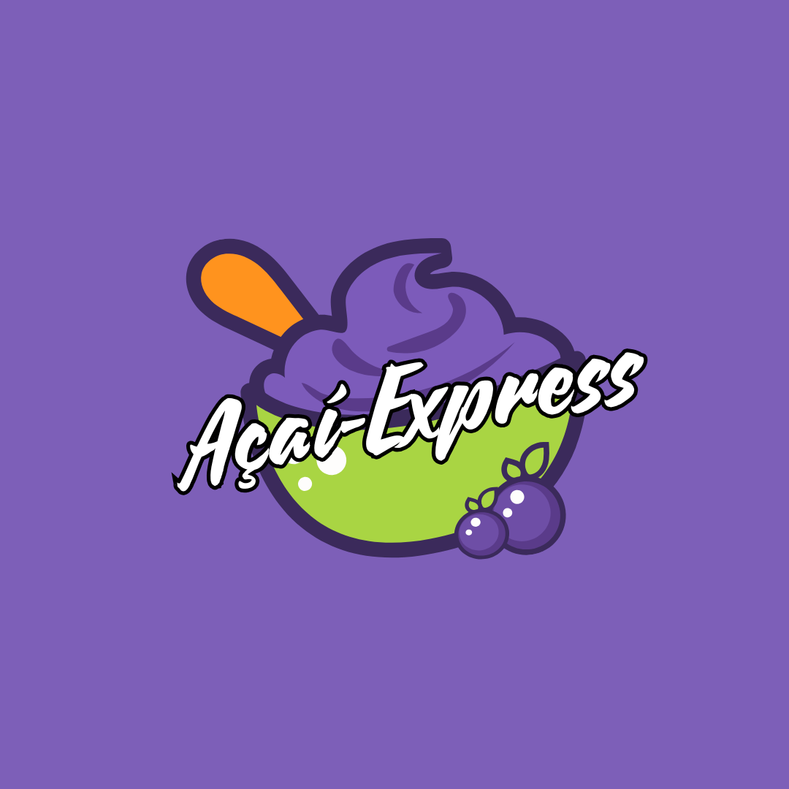
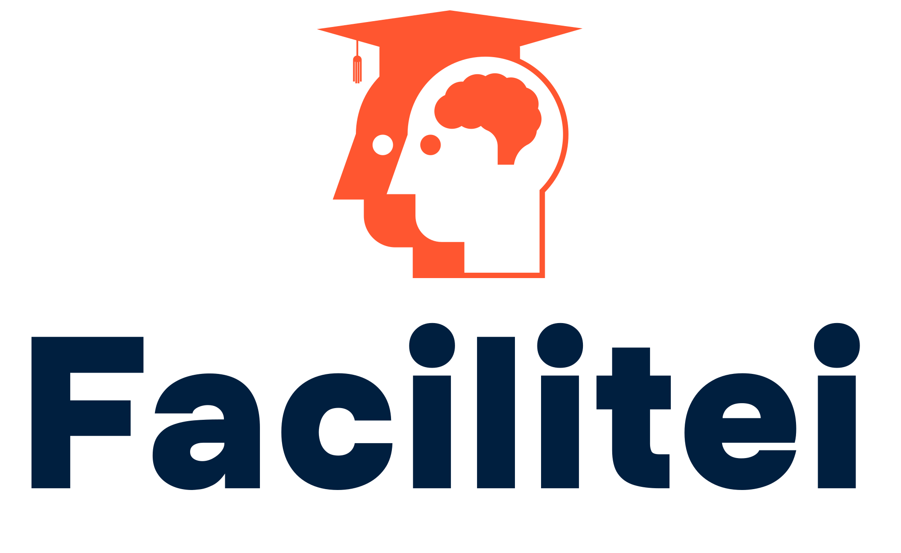
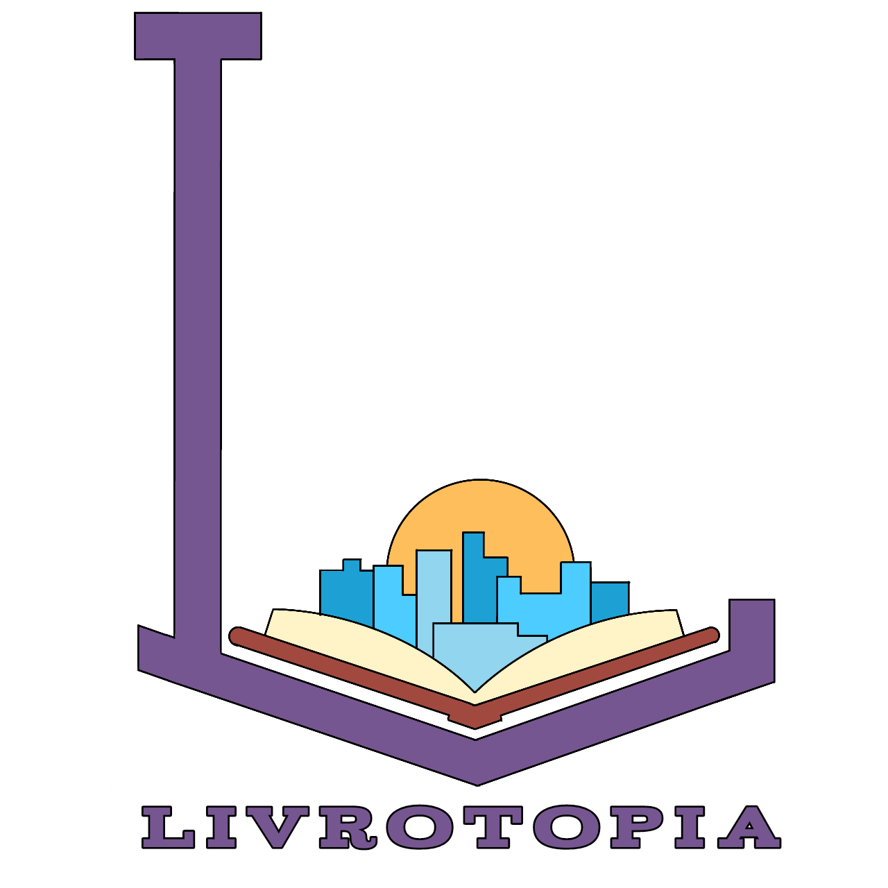
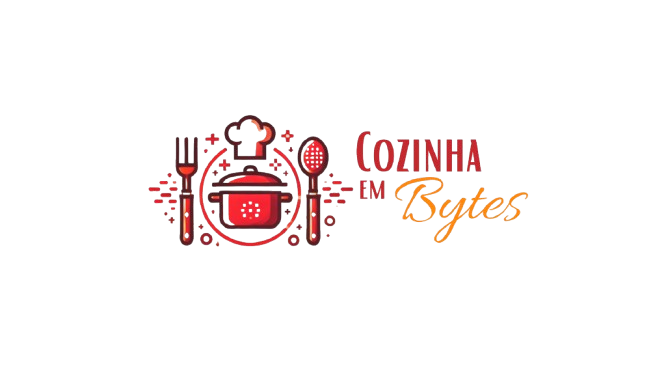
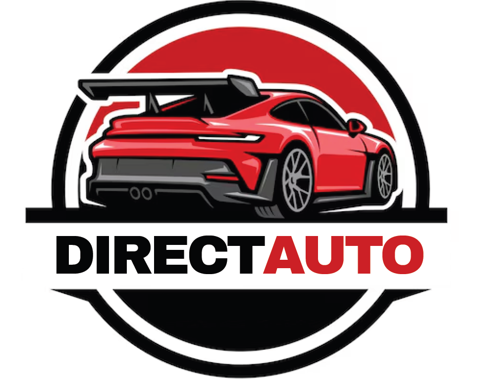

Turma 1M
Formatador ABNT
O projeto “Conversor de Textos para Norma ABNT” tem como propósito ajudar o usuário, que em sua maioria são alunos, mas podem ser de variados grupos, a formatar quaisquer texto para os requisitos da ABNT, que são amplamente utilizados em todas as áreas. Em atividades acadêmicas, principalmente, o uso das normas ABNT é bem presente, facilitando seu dia a dia para a entrega dessas atividades. As referências de uma pesquisa, por exemplo, poderão ser salvas e reutilizadas em outros casos, tornando essa tarefa muito mais rápida.
Açai Express

O objetivo principal do Açaí-Express é facilitar pedidos online permitindo aos clientes personalizar sobremesas de açaí, oferecendo uma experiência de compra fácil, rápida e interativa através de uma interface simples e intuitiva.
Facilitei

O Facilitei é uma plataforma de aprendizagem e planejamento desenvolvida com o objetivo de proporcionar aos alunos uma ferramenta integrada que combina educação com gestão eficiente de metas e tempo. A plataforma se destaca por sua integração com vídeos educacionais do YouTube, permitindo que os usuários assistam a conteúdos categorizados por temas ou disciplinas diretamente dentro do ambiente de estudo.
FDR
A nossa aplicação é direcionada principalmente a analistas em início de carreira, como recém-formados em computação ou estudantes do ensino médio técnico em informática do Brasil e com faixa-etária de no mínimo 15 anos. Esse público é caracterizado por buscar uma interface prática, intuitiva e de fácil aprendizado, que os auxilie na navegação e utilização do sistema com clareza e simplicidade.
Gerenciador de Finanças
O público-alvo da aplicação são mestres de obra que procuram uma automatização do seu trabalho de gerenciamento financeiro. Indivíduos com idade adulta, com média familiaridade a dispositivos móveis, porém, com certa alfabetização e conhecimentos básicos escolares, como matemática e escrita.
Livrotopia

Nosso objetivo é desenvolver um site de e-commerce dedicado à compra e venda de livros, voltado para um público diversificado que aprecia a leitura. Desde mães em busca de livros infantis até pessoas de diversas idades que desejam encontrar obras para entretenimento. Queremos criar uma plataforma acessível e atrativa para todos os amantes de livros.
Turma 2M
Achados e Perdidos

O objetivo do projeto é desenvolver um sistema web para o IFRN Caicó que registre e gerencie itens perdidos, permitindo que servidores adicionem os itens e alunos os visualizem.
Stock Pharma

O público-alvo do projeto Stock Pharma é atingir as empresas farmacêuticas e facilitar o trabalho dos seus colaboradores, nos quais precisam monitorar e gerenciar o estoque de medicamentos de forma ágil e prática. O projeto visa abranger farmácias de pequeno e médio porte que enfrentam desafios de comunicação entre os colaboradores e o patrão em manter um controle adequado de seus estoques, evitando faltas de medicamentos independente da categoria do remédio.
SimplificaMED

A implementação de um sistema de agendamento de consultas médicas é uma alternativa interessante para a otimização dos atendimentos e melhor experiência dos pacientes durante tal processo. Com um sistema eficiente, é possível reduzir filas e tempos de espera desnecessários, garantindo que os pacientes possam agendar suas consultas de forma rápida e prática, realizando também o acompanhamento desses processos. No entanto, para o sucesso desses processamentos é essencial que o usuário atenda alguns requisitos básicos.
PokeGO

O "PokeGo" é uma versão alternativa do universo Pokémon, adaptada ao ambiente escolar do campus Caicó, onde os professores são transformados em "pokémons" que os jogadores devem capturar. O jogo incentiva a exploração das dependências do campus, com o objetivo de encontrar e capturar todos os professores, representados como personagens únicos.
InFoTopia

O site "InfoTopia" tem como objetivo criar um site para os alunos das turmas do IFRN Campus Caicó registrarem e compartilharem suas memórias escolares de forma interativa. A proposta é construir um espaço digital onde fotos de momentos marcantes, como eventos e atividades, sejam organizadas por ano e turma, facilitando a navegação e promovendo a interação entre estudantes de diferentes períodos.
GaBooks

O público-alvo da rede social de livros é composto por leitores, incluindo jovens adultos que buscam compartilhar e descobrir novas leituras. No geral, pessoas que utilizam a leitura como uma ferramenta de aprendizado e entretenimento que desejam interagir e discutir sobre livros.
Cozinha em Bytes

O blog culinário Cozinha em Bytes será um espaço interativo que possibilitará a comunicação entre os seus usuários. O público-alvo abrange pessoas que estão interessadas em compartilhar e aprender novas experiências culinárias.
Direct Auto

O público-alvo do sistema de venda de veículos abrange os seguintes perfis: Concessionárias, revendedores autônomos e indivíduos que desejam comercializar veículos novos ou usados e usuários que estão buscando adquirir veículos, sejam eles novos ou usados, de forma prática e segura.